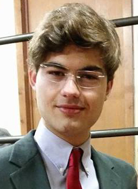

I am an outgoing and energetic young professional, seeking a
career that fits my professional skills, personality, and drive for constant learning.
Currently looking for a summer internship position.
- Education
-
Rensselaer Polytechnic Institute 2014-2017
Major:Computer Science
Major:Information Technology & Web Science
School Website
American School Foundation 2010-2014
School Website
- Skills
-
Languages
C, C++, Java, HTML, CSS, XML, Javascript, PHP, Python, X86 Assembly, MIPS, LaTeX
Tools
Cisco Packet Tracer, Secure CRT, IDA Pro, OllyDbg, VMWare, MySQL, Apache, Visual Studio, Wireshark, Burp Suite, Metasploit, Git, Xcode, Adobe Photoshop
- Experience
-
PROSASoftware and Application Engineering Intern 2015
- Worked in the development of custom payment, social media, and hiring platforms
- Lead the development of mobile prototypes for existing software platforms
RockhemWeb Development Intern 2014
- Worked in the development of Glaze, a user-friendly website creation and monetization application
- Used PHP and Javascript to create website importing and editing tools
Rensselaer Polytechnic InstituteTechnology Help Desk 2015
- Assisted students and faculty in resolving networking, software, operating system, malware, and other issues
- worked in a team environment to construct solutions for campus wide problems
- Hobbies
-
RPISec (computer security club and CTF team at RPI)
- Competed in CSAW CTF 2014, Boston KeyParty 2014, Fairgame CTF 2014
- Attended seminars in reverse engineering, web security, and digital forensics
Rensselaer Center for Open Source Software
- Developed open source fitness gamification mobile applications on iOS and Android
HackRPI (hackathon team and organizer at RPI)
- Developed an XML parser, user database, and SMS platform to deliver web content via SMS
Mexican National Debate Team (Captain)
- Pan-American debate champion, 8th place worldwide, best ESL speaker (WSDC) worldwide
- Relevant Coursework
- Networking Lab I (CCENT / CCNA), Modern Binary Exploitation, Data Structures, Web Systems Development Foundations of Computer Science, Computer Organization, Intro to Algorithms